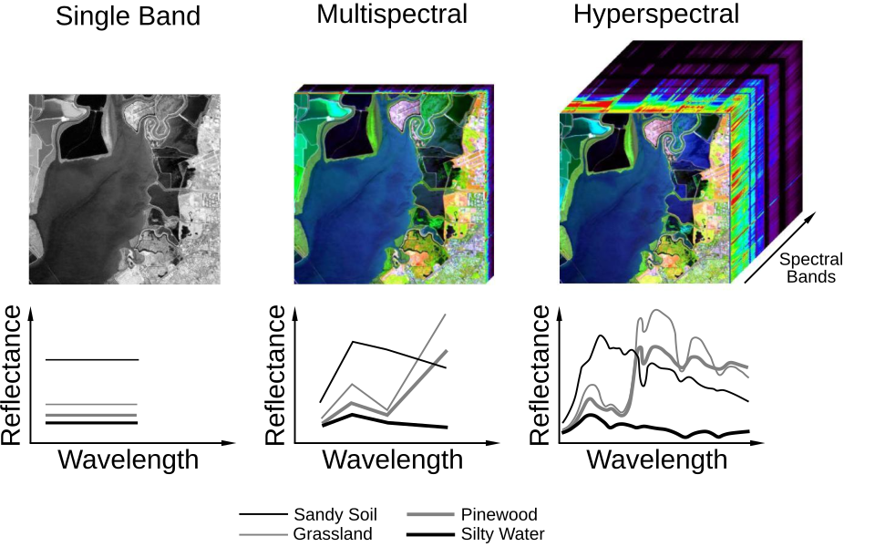
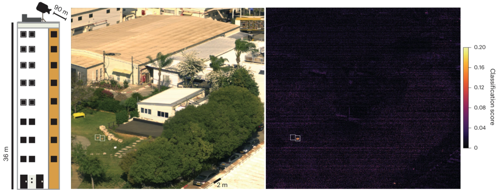

Today I’m launching a $75,000 microgrant program to grow the field of hyperspectral biology.
Hyperspectral biologists aim to study life through the full spectrum of light that organisms (and their molecules) reflect. They also engineer organisms that emit molecules which absorb or reflect light in particular ways, such that we can “read out” their molecular states from far away, including from satellites orbiting Earth.
Whereas a normal camera collapses light into just three channels (red, green, and blue; mimicking the human eye), hyperspectral cameras capture the full spectrum of wavelengths for every pixel in an image. In other words, every pixel in the image has a 2D chart, or “spectral plot,” attached to it, where the x-axis is wavelength, and the y-axis is reflectance. These special cameras enable us to see aspects of biology that are normally invisible to the naked eye. (Unfortunately, hyperspectral cameras are also expensive, costing anywhere from $10,000 to $100,000 each.)

NASA scientists built the first hyperspectral cameras in the early 1980s to map mineral deposits and algal blooms; each type of molecule absorbs and reflects light in a distinct way, and so you can figure out what is happening on Earth by running algorithms that deconvolute the images. Hyperspectral cameras are widely used today to quantify shifts in chlorophyll in plants, for example, which strongly absorb blue and red light, and to monitor moisture levels in soil.
It wasn’t until last year, though, that MIT scientists (led by Yonatan Chemla, a friend of mine) merged hyperspectral cameras with synthetic biology.
For a study in Nature Biotechnology, Chemla and colleagues engineered two strains of bacteria to overproduce pigments (called biliverdin IXα and bacteriochlorophyll a) that absorb light in a distinctive way, meaning they each have a unique hyperspectral fingerprint. The researchers sprayed these engineered cells onto patches of soil at Fort Devens, a military base in Massachusetts, and then flew a hyperspectral drone overhead. By using a computer algorithm to separate the pigment’s signal from the background noise of dirt and sand, they could detect the locations of these microbes from up to 90 meters away. (In unpublished work, they did the same with a satellite orbiting hundreds of miles above Earth.)

But this is just the beginning of what’s possible!
Therefore, I’m giving out $75,000 in microgrants — ranging from $5,000 to $12,500 each — to help grow the field of hyperspectral biology. These grants are supported by the Experiment Foundation, and you can click here to apply for funding by July 10. I’ll entertain a huge range of ideas, but here are some things that I think would be particularly useful…
First, we need cheaper and (ideally) open-source hyperspectral cameras. This is a major bottleneck on people’s ability to enter this field. Hyperspectral cameras usually cost tens of thousands of dollars, as I said, and most academic labs are not going to shell out that kind of money to pursue a risky research project. Most labs, similarly, don’t have military connections to access satellites with hyperspectral cameras. Ideally, there would be an open-source initiative to make cheap hyperspectral cameras, give away the blueprints, and also sell them (pre-assembled) for a profit. (There was an open-source hyperspectral camera initiative, called OpenHSI, but it hasn’t been active for at least a year.)
Second, we need foundational datasets of hyperspectral profiles! We literally need to point hyperspectral cameras at different molecules and varied types of cells, collect their spectra, and then release those data publicly.
When Chemla started his experiments, he spent a few weeks searching through chemical databases to find hyperspectral data. He figured that someone must have collected spectral plots for various molecules, just to see which wavelengths they absorb most strongly. But no! He could only find about 40 molecules with any spectra at all.
This is bad. We need to collect much more spectral data on molecules and organisms. Indeed, we should collect full spectral profiles for every naturally occurring biomolecule and release the data publicly. Some molecules will have unique fingerprints that increase the resolution of this technology and let us see things more clearly. The dataset would also enable us to build machine learning models that can be used to design new types of molecules with desirable spectra. By finding more molecules with unique hyperspectral fingerprints, we’ll also be able to do “multiplexed” imaging. Say we want to engineer plants that detect 10 different pathogens. If a plant detects pathogen A, it could be “programmed” to emit hyperspectral molecule A, which has a unique fingerprint, and the same for B, and so on. You could then deconvolute many different hyperspectral signatures to record even more information in a specific spatial region on Earth.
Third, we should “port” hyperspectral reporter genes into plants and other organisms. Chemla’s work was limited to microbes, so I would love for someone to engineer a plant (maybe tobacco or something simple) to emit a hyperspectral molecule, and then fly a drone overhead to see if you can detect the signature from far away. The reason this is important, I think, is because there are stringent regulations around releasing engineered microbes into the wild. It’s almost impossible to release microbes outside of containment vessels, unless it’s for agriculture (like biopesticides) or it’s a food, such as a probiotic. The regulations are more navigable for plants.
And finally, there’s a lot of room to improve algorithms. We need better image detection algorithms for hyperspectral data, and especially open-source computational tools. I’d like to fund tools that enable scientists to upload images and deconvolute the data for their biomolecule of interest. It’d be cool if people could upload their “hyperspectral molecule” of choice, submit data on that molecule’s spectrum, and then automatically run an algorithm to see if the signal is visible in an image. AI tools could help a lot here. On a related note, I suspect there’s also a lot of work that could be done to use AI to design molecules with desirable spectral plots.
Fortunately, the things holding back hyperspectral biology seem to be the actual biology, and not all the other infrastructure required. Many companies have already launched hyperspectral satellites into space; Pixxel, for example, is building what it calls the world’s highest-resolution hyperspectral satellite constellation. There’s also Orbital Sidekick, Planet, Wyvern, and a bunch of government projects doing hyperspectral stuff. I’d estimate that there are about 60 satellites with hyperspectral cameras already in orbit.
These satellites are being used to monitor crop health and soil moisture, as I said earlier, but also to track methane emissions and oil spills. And, to make money, these companies sell hyperspectral images to speculators searching for minerals and other resources (especially lithium and copper deposits).
My dream for hyperspectral biology is to use it as a tool to monitor all the things we care about on Earth. We can engineer organisms to sense explosives, for example, and then spray them in places where unexploded landmines are known to exist. When these organisms detect an explosive, they would emit hyperspectral molecules which are visible from satellites. In Laos alone, the U.S. dropped more than 270 million cluster bombs during the Vietnam War, and about 80 million of them did not detonate. More than 20,000 people have been killed or injured by these bombs since the war ended. Similarly, we could engineer plants to sense pathogens and release hyperspectral molecules in response. Then, we could use drones with hyperspectral cameras to detect outbreaks before they spread. The beauty of biology is that it can be engineered to sense just about anything, from ions to metals and pollutants to minerals. We can “hook up” this sensing capability to hyperspectral molecules, and thus use living organisms as living biosensors (visible from space!) for anything we want.
The end goal is a planetary-scale, autonomous biosensing network, where molecules emitted from lifeforms are used to monitor the health of Earth as a whole.
My plan is to give out 8 to 12 microgrants with this first tranche of funding. Note that every recipient must release their data publicly, and I’ll check in every couple of months to see how things are going. It’s perfectly fine if experiments fail, since some of these proposals will be risky. The funds can only be used to support experiments, not events or workshops. I’m being advised on this program by Yonatan Chemla and Andrew York, a physicist who builds microscopes at the Chan Zuckerberg Biohub.
Of course, I also know that $75,000 won’t grow this field nearly as much as it deserves. It’s only a starting point, but I hope these microgrants grow interest in this field and also help to alleviate some of its major bottlenecks. DARPA has also been a major funder of hyperspectral biology; they supported Chemla’s work, for example, and have also funded groups at Purdue studying whether plants show observable spectral responses to synthetic chemicals. It’s good that people are already pushing on both fronts: engineering organisms to emit hyperspectral signatures, and also probing natural organisms for signals we can read out using hyperspectral cameras (but which are normally invisible to the naked eye and normal cameras).
If these grants work out, I hope larger philanthropists will follow and support this field. And finally, if you’d like to support these microgrants, please email niko@asimov.com to donate. Every dollar will go directly to scientists; there is no overhead.